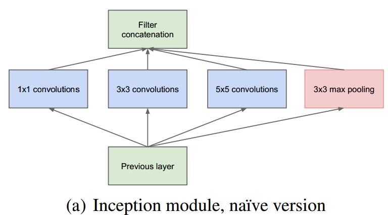
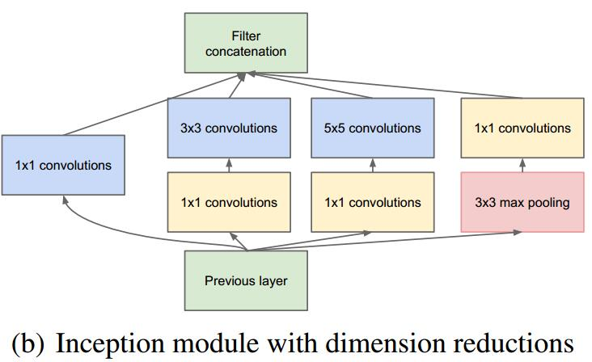
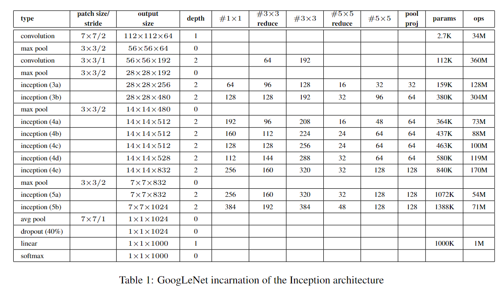

起源：
“我们提出了一种深层卷积神经网络架构，其代号为“ Inception”，它负责为ImageNet大规模视觉识别挑战赛2014（ILSVRC 2014）中的分类和检测设置新的技术水平。 该体系结构的主要特点是网络内部计算资源的利用率得到提高。 这是通过精心设计的设计实现的，该设计允许在保持计算预算不变的情况下增加网络的深度和宽度。 为了优化质量，架构决策基于Hebbian原则和多尺度处理的直觉。我们提交给ILSVRC 2014的一种具体化身叫GoogLeNet，它是一个22层深度的网络，其质量在分类和检测的背景下进行评估。”
动机：
一般来说，提升网络性能最直接的办法就是增加网络深度和宽度，这也就意味着巨量的参数。但是，巨量参数容易产生过拟合也会大大增加计算量。所以我们意图将全连接甚至一般的卷积都转化为稀疏连接，然后找到一种既可以保持网络结构的稀疏性，又能利用密集矩阵的高计算性能的方法。
网络结构：
原始的Inception模块：

对上图做以下说明：
- 采用不同大小的卷积核意味着不同大小的感受野，最后拼接意味着不同尺度特征的融合；
- 之所以卷积核大小采用1、3和5，主要是为了方便对齐。设定卷积步长stride=1之后，只要分别设定pad=0、1、2，那么卷积之后便可以得到相同维度的特征，然后这些特征就可以直接拼接在一起了；
- 文章说很多地方都表明pooling挺有效，所以Inception里面也嵌入了。
- 网络越到后面，特征越抽象，而且每个特征所涉及的感受野也更大了，因此随着层数的增加，3x3和5x5卷积的比例也要增加。
但是，使用5x5的卷积核仍然会带来巨大的计算量。为此，借鉴NIN，采用1x1卷积核来进行降维。
例如：上一层的输出为100x100x128，经过具有256个输出的5x5卷积层之后(stride=1，pad=2)，输出数据为100x100x256。其中，卷积层的参数为128x5x5x256。假如上一层输出先经过具有32个输出的1x1卷积层，再经过具有256个输出的5x5卷积层，那么最终的输出数据仍为为100x100x256，但卷积参数量已经减少为128x1x1x32 + 32x5x5x256，大约减少了4倍。
具体改进后的Inception Module如下图：

表格：

具体：
第一层 convolution层
- 输入(data)：224×224×3
- 卷积核size：7×7，滑动步长（stride）为 2，padding为 3
- 输出维度：112×112×64，计算方式：(224 + 2×3 − 7 + 1) / 2 = 112 ，kernel size = 64
第二层 max pool层
- 输入维度：112×112×64
- pooling size：3×3，滑动步长（stride）为 2，padding为 1
- 输出维度：56×56×64，计算方式：(112 + 2×1 − 3 +1 ) / 2 = 56
第三层 convolution层
- 输入维度：56x56x64
- 卷积核size：3x3,滑动步长（stride）为1，padding为1
- 输出维度：56x56x192，计算方式：（56 + 2x1 - 3 + 1）/ 1 = 56，kernel size = 192
第四层 max pool层
- 输入维度：56x56x192
- pooling size: 3x3,滑动步长（stride）为2，padding为1
- 输出维度：28x28x192，计算方式：（56 + 2x1 - 3 + 1）/ 2 = 28
第五层 Inception层
- 分为4条通道，每条通道的输入均为第四层的输出（28 x 28 x 192）:
- 通道1：1×1 卷积层，64个卷积核，输出大小为 28×28×64；
- 通道2：1×1 卷积层，96个卷积核，输出大小为 28×28×96；作为输入进入 3×3 卷积层，输出大小为 28×28×128；
- 通道3：1×1 卷积层，32个卷积核，输出大小为 28×28×32；作为输入进入 3×3 卷积层，输出大小为 28×28×32；
- 通道4：3×3 的 pooling 层，输出大小为28×28×192；作为输入进入 1x1卷积层，输出大小为28×28×32；
- Inception层的输出为这四个通道的输出和：64 + 128 + 32 + 32 = 256
GoogLeNet的整体结构如下图：

应用场景：
计算机视觉
- 图像识别
- 物体识别
- 行为认知
- 姿态估计
Inception V1凭借其独有的Inception结构在控制参数量的同时又扩展了网络的深度，Inception V1网络的深度有22层，但是参数量却只有500万个，大大少于VGGNet的1亿3000万和AlexNet的6000万的参数量。尽管参数量少于其他的网络结构，但是其网络性能却更加优越，在ILSVRC2014挑战赛上取得了-top5错误率6.67%的好成绩。
优缺点：
GoogLeNet的创新点都是围绕减少深度和提高性能来设计的。
- 借鉴NIN（Network in Network）中提出的思想，采用1×1 conv 来保持空间维度的同时，降低深度，也就是降低通道数量，同时1×1 conv还可以为你的网络增强非线性。
- 横向的卷积核排列设计，使得多个不同size的卷积核能够得到图像当中不同cluster的信息 ，我们称之为“多尺度”。这样融合了不同尺度的卷积以及池化，一个模块一层就可以得到多个尺度的信息，下一阶段也可以同时从不同尺度中提取的特征，可以进行多维度特征的融合，所以效果更好。把计算力拓宽，也避免了太深训练梯度弥散的问题。
- 对深度相对较大的网络来说，梯度反向传播能够通过所有层的能力就会降低。文中指出：“在这个任务上，更浅网络的强大性能表明网络中部层产生的特征应该是非常有识别力的”。通过将辅助分类器添加到这些中间层，可以提高较低阶段分类器的判别力，这是在提供正则化的同时克服梯度消失问题。后面的实验表明辅助网络的影响相对较小（约0.5），只需要其中一个辅助分类器就能取得同样的效果。
- 较高层会捕获较高的抽象特征，其空间集中度会减少。这表明随着网络转移到更高层，Inception架构中3×3和5×5卷积的比例应该会增加。而到最后一个卷积层出来的全连接，由全局平均池化替代了，减少了参数，节约了计算量。
- 缺少对池化的深入思考。